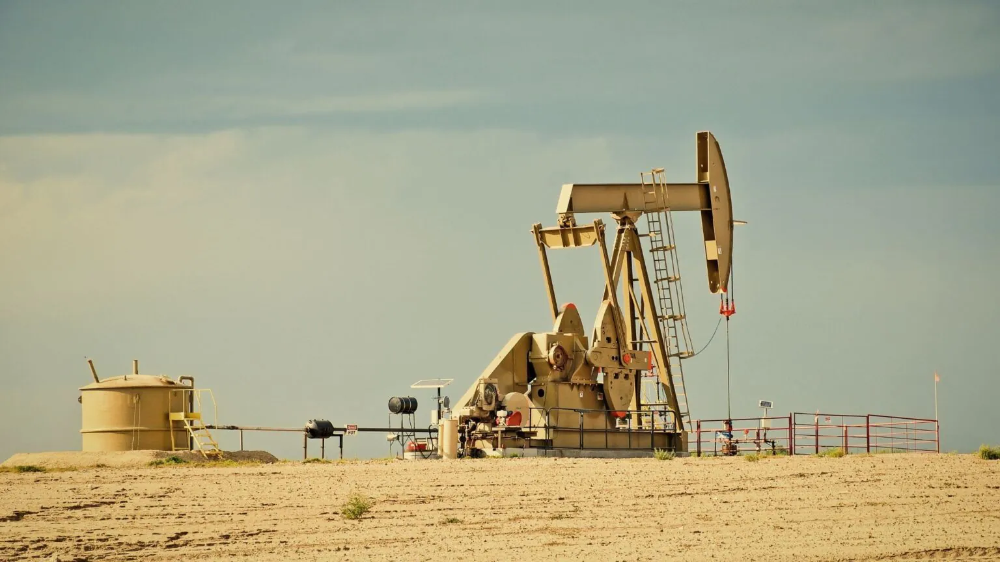

Welcome Tectonic Energy
Welcome to Tectonic Energy! We are a leading provider of innovative solutions and energy resources, committed to powering the future responsibly and sustainably. Explore our website to learn about our operations, our commitment to excellence, and how we contribute to a dynamic global energy landscape." Tectonic Energy is a multinational oil and gas company focused on sustainable energy production. Headquartered in Houston, Texas, the company specializes in exploration, production, refining, and distribution of petroleum products. Established in 2005, the company operates across Africa and the Middle East, prioritizing sustainable energy practices, technological innovation, and community development. With growing investments in renewable energy, Tectonic Energy is also aligning its operations with global environmental and sustainability standards.
Operations
Our significant infrastructure
With a network of pipelines and fuel import terminals around the country, we deliver about a quarter of all South Africa's fuel products, safely and reliably, wherever they are needed. Products we import through the world’s largest independent trader, the Vitol Group, supplement local fuel production at our Geelong Refinery, which supplies around 50 percent of Victoria’s fuel making it an important part of South Africa's energy security.